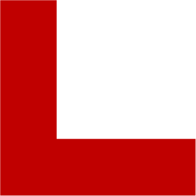
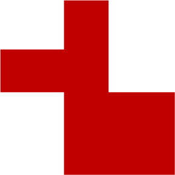
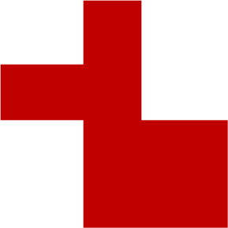
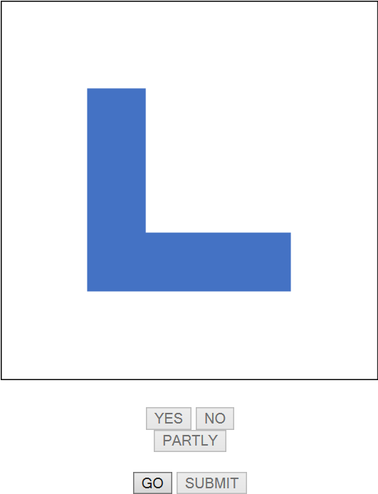
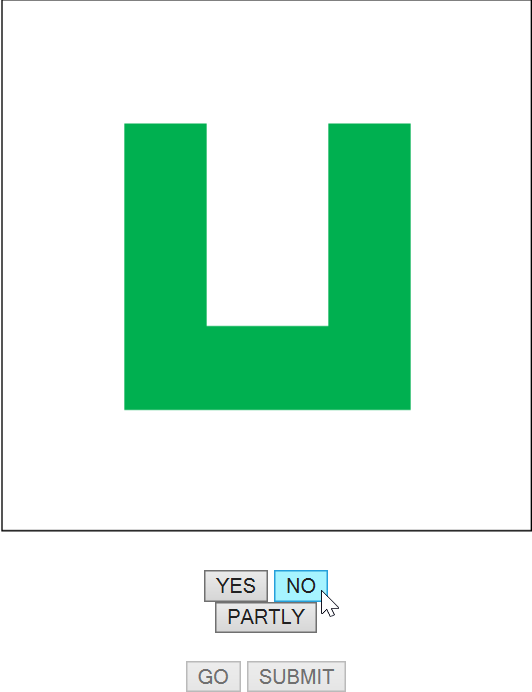
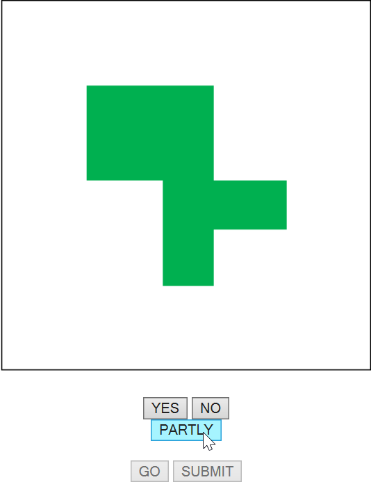

Partial Match
How to play
There are three different shapes, each in three different colours, blue, red and green:

 

Objective: Compare the first and the next image. If they match in colour AND shape, please click the button "YES". If the colour AND shape is not the same, click "NO".
If either colour is the same or either
the shape is the same, click "Partly".
Example:



Click "Go" to get the next image. The first image is blue and has an L shape. The next image is green and has an U shape. So they have nothing in common, therefore click "No".
The next image is green but has a different shape than the previous image, the colour is the same, therefore cklick "Partly".
Click on "Submit" when the other buttons are grayed out in order to save your status.
You can save five games in total.
Back